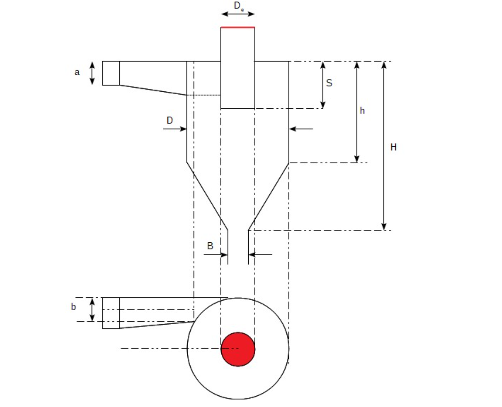

Cyclone Separator — Design & Performance Calculation Tool
- Two independent methods: Bohnet (1997) and Leith & Licht
- Covers standard geometry selection, cut-off diameter d₅₀, grade efficiency curve and pressure drop
- Side-by-side method comparison available in Tab D
A. Theory, Applications & Standard Geometry
What is a Cyclone Separator?
A cyclone separator uses centrifugal force to separate dust or particulate matter from a gas stream. Gas enters tangentially, spirals downward along the body wall, and particles — being denser — are flung outward and collected at the bottom dust outlet. Cleaned gas exits through a central vortex finder at the top.
Cyclones are among the most widely used dust-collection devices due to their simplicity, absence of moving parts, low maintenance cost, and effectiveness for particles above ~5 µm.
Typical Applications
- Plastics: Capture plastic dust after pneumatic conveying of pellets
- Wood industry: Collect sawdust from sawmills and woodworking lines
- Chemical plants: Dust collection at end of pneumatic conveying lines
- Agriculture: Dedust air conveying grain or material to silos
- Food processing: Powder and flour recovery
- Cement & minerals: Pre-separation upstream of bag filters
Calculation Methods
Bohnet (1997) — Uses K-ratio geometry factors. Valid for squared tangential inlets and dust loads ≤ 10 g/m³. Calculates velocities, friction coefficients, cut-off d₅₀, grade efficiency and pressure drop. Errors up to ±40% vs experiments.
Leith & Licht (1970s) — Force-balance approach. Simpler and quicker. Domain of validity: flowrate 0.06–0.13 m³/s, temperature 310–422 K, atmospheric pressure. Not always the most precise method.
⚠ Disclaimer: Both methods are for pre-design estimation only. Results carry up to ±40% uncertainty. Always engage a specialist manufacturer for detailed design before construction.
Cyclone Nomenclature Sketch

Standard Geometry Table — Koch & Licht (1977)
All dimensions expressed as ratios relative to cyclone body diameter D. Choose a geometry in the calculator tabs and enter D to obtain absolute dimensions.
| Dimension / Ratio | Lapple (Standard) | Swift (Standard) | Peterson-Whitby (Standard) | Stairmand (High Eff.) | Swift (High Eff.) | Description |
|---|---|---|---|---|---|---|
| a / D | 0.500 | 0.500 | 0.583 | 0.500 | 0.440 | Inlet height / body dia. |
| b / D | 0.250 | 0.250 | 0.208 | 0.200 | 0.210 | Inlet width / body dia. |
| S / D | 0.625 | 0.600 | 0.583 | 0.500 | 0.500 | Vortex finder insertion depth |
| De / D | 0.500 | 0.500 | 0.500 | 0.500 | 0.400 | Gas outlet (vortex finder) dia. |
| h / D | 2.000 | 1.750 | 1.333 | 1.500 | 1.400 | Cylinder section height |
| (H−h) / D | 2.000 | 2.000 | 1.840 | 2.500 | 2.500 | Cone section height |
| B / D | 0.250 | 0.400 | 0.500 | 0.375 | 0.400 | Dust outlet diameter |
| H / D (total) | 4.000 | 3.750 | 3.173 | 4.000 | 3.900 | Total cyclone height |
Geometry Calculator — Absolute Dimensions
Select a standard geometry and enter cyclone body diameter D to compute all absolute dimensions.
m
| Dimension | Ratio (× D) | Absolute value |
|---|
B. Bohnet (1997) — Step-by-Step Calculator
Valid for standard cyclones with squared tangential inlets and dust loads ≤ 10 g/m³. Errors up to ±40% — for estimation and pre-design only. Reference: Bohnet (1997).
Process Inputs
m³/s
kg/m³
Pa·s
kg/m³
m
—
Step 4.2 — Computed Geometry
| Dimension | Value |
|---|
Step 4.3 — Inlet & Outlet Velocities
Inlet velocity uCe
—m/s
Outlet velocity uCi
—m/s
Step 4.4 — Friction Coefficients
Reynolds no. Rec
—
Friction coeff. Cf
—
Contraction coeff. Ce
—
Step 4.5 — Characteristic Velocities
uCri (radial at Ri)
—m/s
uCθi (tangential)
—m/s
Step 4.6 — Cut-Off Diameter
Cut-off diameter d50
—µm
Step 4.7 — Grade Efficiency Curve
Step 4.8 — Pressure Drop
Pressure drop ΔPc
—Pa
ΔP in mm H₂O
—mmH₂O
Total coeff. ξc
—
C. Leith & Licht Method — Step-by-Step Calculator
Force-balance model (Leith & Licht, 1970s). Domain of validity: V = 0.06–0.13 m³/s, T = 310–422 K, atmospheric pressure. References: Dirgo & Leith (2007), Altmeyer et al. (2004).
Process Inputs
m³/s
kg/m³
Pa·s
kg/m³
µm
K
m
Step 4.2 — Cyclone Dimensions
| Dimension | Value |
|---|
Step 4.3 — Natural Length
Natural length l (calc.)
—m
l effective (capped)
—m
Cone dia. dc at l
—m
Step 4.4 — Vortex Exponent & Inlet Velocity
Vortex exponent n
—
Inlet velocity vi
—m/s
Step 4.5 & 4.6 — Inertia & Geometry Parameters
Inertia param. Ψ
—
Geometry param. C
—
Step 4.7 — Efficiency & Cut-Off Diameter
Collection efficiency η
—%
Cut-off diameter d50
—µm
Grade Efficiency Curve
Step 4.9 — Pressure Drop
Pressure drop ΔP
—Pa
ΔP in mm H₂O
—mmH₂O
Gas turns Nt
—
D. Method Comparison — Same Inputs, Both Calculations
Enter common inputs below and click Run Comparison. Both methods are executed and results shown side by side.
Common Inputs
m³/s
kg/m³
Pa·s
kg/m³
m
K
—
Results — Side by Side
| Parameter | Bohnet (1997) | Leith & Licht |
|---|---|---|
| Cut-off diameter d₅₀ | — | — |
| Pressure drop ΔP | — | — |
| ΔP in mm H₂O | — | — |
| Inlet velocity | — | — |
Grade Efficiency Curves — Both Methods Overlaid
Note: The two methods may give significantly different results for the same inputs — this is expected, as they are based on different mathematical models and assumptions. Both carry inherent uncertainty up to ±40%. The comparison helps bracket the likely range of performance.